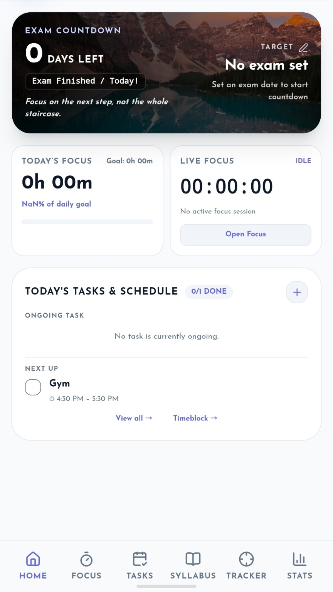

Built from a real preparation problem.
Trackability started with a problem I experienced myself: too much of my preparation was spread across different places, making it harder to manage time, tasks and revision.
I wanted one place to understand my preparation.
I used to struggle with time management and task management. I also had to switch between different apps to keep track of things like my gym and sleep.
Another problem kept coming back: I would study a topic, move on, and later struggle to remember what I had actually covered the previous week when it was time to plan revision.
That is where the idea for Trackability came from. I wanted a workspace where my tasks, focused study, syllabus, revision, MCQs, tests and personal tracking could live together — so I could spend less time managing my preparation and more time actually preparing.
Study it. Revise it. Practice it. Track it. Know what comes next.

Make progress visible enough to act on it.
Turn intentions into tasks and time blocks.
Record the work you actually do.
Keep MCQs and tests connected to preparation.
See the routines that support consistency.
Use history and trends to understand patterns.
Make the next day easier to plan.
Dr. Ankit Bhausaheb Bagul, (MBBS)
Trackability is independently created and operated by Ankit. The product is being developed around the practical preparation and productivity problems that inspired its creation.